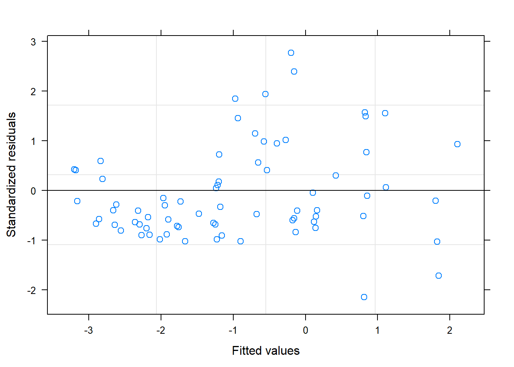
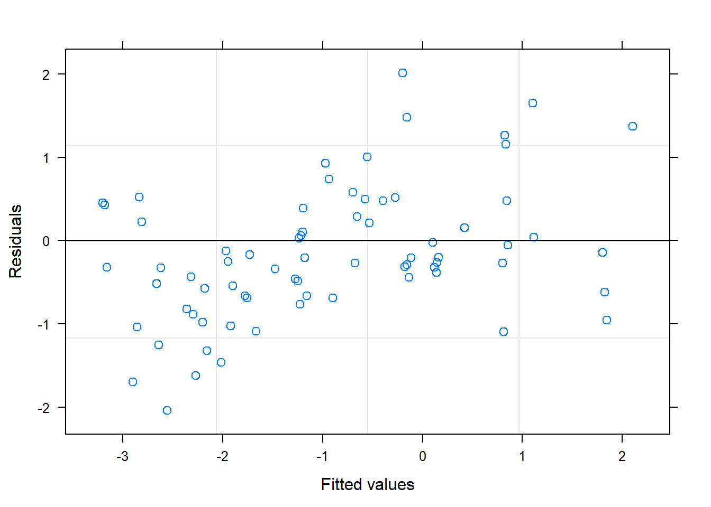
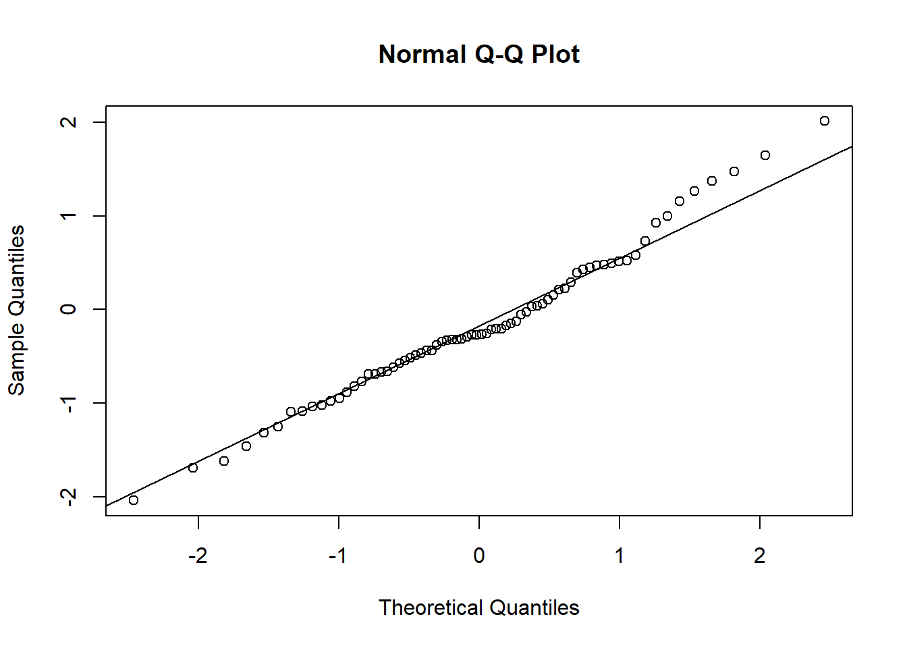
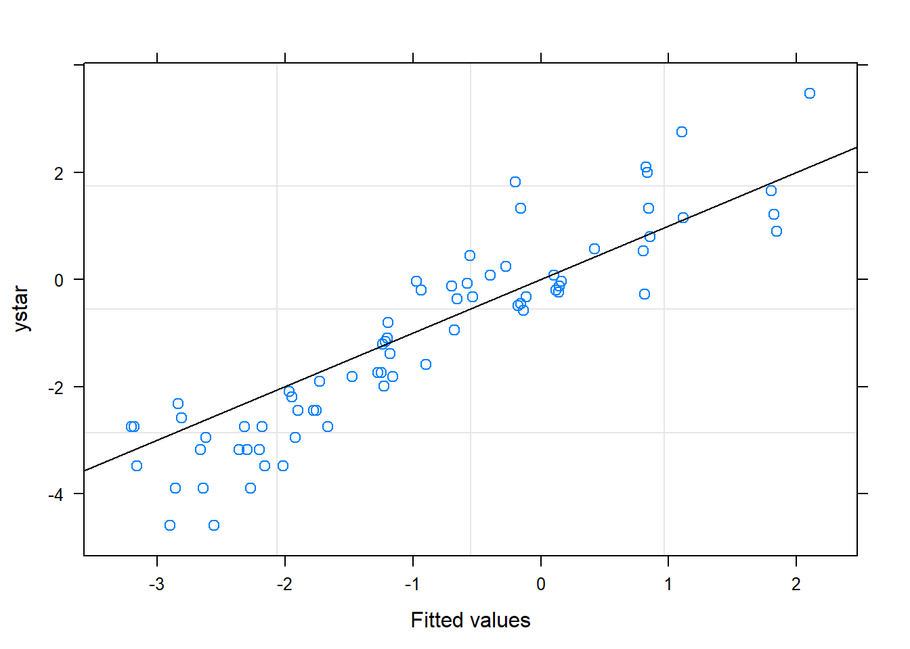
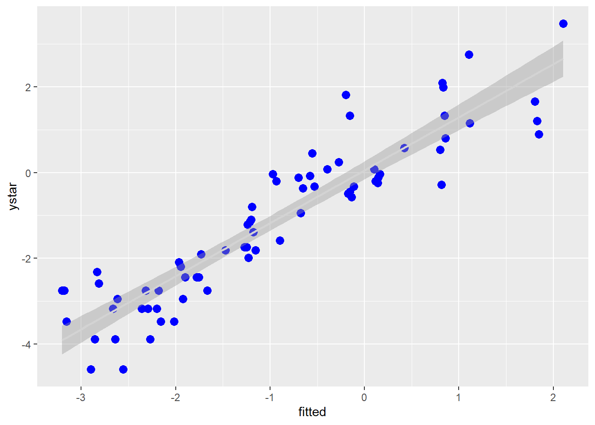

Chapter 1 Exercise 4
1.1 Load packages
Here is the R code to download the required packages for this exercise.
## Loading required package: pacmanLoad the packages needed for this exercise:
1.2 Import data
Our data is located in ex4.csv file, which can be found on my github repo. Import the data and create new variables using the code below.
# import data
a <- read_csv("https://raw.githubusercontent.com/luckymehra/epidem-exercises/master/data/ex4.csv",
col_types = cols(
blk = col_factor(), # parse blk as a factor
trt = col_factor() # parse trt as a factor
))
# create new variables
a$y <- a$pctsev/100
a$ystar <- log(a$y/(1-a$y))
a$wt <- a$y*(1-a$y)
# print the data
knitr::kable(head(a),
caption = "The first 6 rows of dataset *a*.")| plot | t | blk | trt | pctsev | y | ystar | wt |
|---|---|---|---|---|---|---|---|
| 101 | 0 | 1 | 2 | 9 | 0.09 | -2.313635 | 0.0819 |
| 102 | 0 | 1 | 1 | 6 | 0.06 | -2.751535 | 0.0564 |
| 103 | 0 | 1 | 3 | 2 | 0.02 | -3.891820 | 0.0196 |
| 201 | 0 | 2 | 2 | 7 | 0.07 | -2.586689 | 0.0651 |
| 202 | 0 | 2 | 3 | 5 | 0.05 | -2.944439 | 0.0475 |
| 203 | 0 | 2 | 1 | 3 | 0.03 | -3.476099 | 0.0291 |
## Observations: 72
## Variables: 8
## $ plot <dbl> 101, 102, 103, 201, 202, 203, 301, 302, 303, 401, 402, ...
## $ t <dbl> 0, 0, 0, 0, 0, 0, 0, 0, 0, 0, 0, 0, 7, 7, 7, 7, 7, 7, 7...
## $ blk <fct> 1, 1, 1, 2, 2, 2, 3, 3, 3, 4, 4, 4, 1, 1, 1, 2, 2, 2, 3...
## $ trt <fct> 2, 1, 3, 2, 3, 1, 3, 2, 1, 1, 2, 3, 2, 1, 3, 2, 3, 1, 3...
## $ pctsev <dbl> 9, 6, 2, 7, 5, 3, 4, 2, 6, 1, 1, 4, 4, 6, 10, 2, 5, 3, ...
## $ y <dbl> 0.09, 0.06, 0.02, 0.07, 0.05, 0.03, 0.04, 0.02, 0.06, 0...
## $ ystar <dbl> -2.313635, -2.751535, -3.891820, -2.586689, -2.944439, ...
## $ wt <dbl> 0.0819, 0.0564, 0.0196, 0.0651, 0.0475, 0.0291, 0.0384,...1.3 First mixed model
1.3.1 Fit the model
Run the mixed model analysis using nlme package in R. The function used to fit the mixed model is called lme().
# fit the model
mm_1 <- lme(ystar ~ trt*t, # fixed effects
data = a,
random = list(blk = ~ 1, plot = ~ 1), # random effects
correlation = corAR1(form = (plot = ~ 1)), # specify that observations within a plot are autocorrelated. Other valid arguments are corAR1, corARMA, corCAR1, corCompSymm, corExp, corGaus, corLin, corRatio, corSpher, corSymm
contrasts = list(trt = "contr.SAS"), # specify this option to get parameter estimates similar to reported by SAS
weights = ~ I(1/wt))
# output the summary
summary(mm_1)## Linear mixed-effects model fit by REML
## Data: a
## AIC BIC logLik
## 210.5257 232.4222 -95.26285
##
## Random effects:
## Formula: ~1 | blk
## (Intercept)
## StdDev: 0.1887117
##
## Formula: ~1 | plot %in% blk
## (Intercept) Residual
## StdDev: 4.604287e-05 0.2519511
##
## Correlation Structure: AR(1)
## Formula: ~1 | blk/plot
## Parameter estimate(s):
## Phi
## 0.06205463
## Variance function:
## Structure: fixed weights
## Formula: ~I(1/wt)
## Fixed effects: ystar ~ trt * t
## Value Std.Error DF t-value p-value
## (Intercept) -2.5689859 0.3629604 57 -7.077868 0.0000
## trt2 -0.1948084 0.5193013 6 -0.375136 0.7205
## trt1 -0.5406041 0.5136249 6 -1.052527 0.3331
## t 0.0992675 0.0142177 57 6.981964 0.0000
## trt2:t -0.0221696 0.0202998 57 -1.092109 0.2794
## trt1:t 0.0437431 0.0212717 57 2.056398 0.0443
## Correlation:
## (Intr) trt2 trt1 t trt2:t
## trt2 -0.652
## trt1 -0.658 0.459
## t -0.888 0.621 0.627
## trt2:t 0.623 -0.924 -0.439 -0.700
## trt1:t 0.592 -0.413 -0.913 -0.667 0.466
##
## Standardized Within-Group Residuals:
## Min Q1 Med Q3 Max
## -2.1518915 -0.6900213 -0.4024653 0.4132408 2.7733450
##
## Number of Observations: 72
## Number of Groups:
## blk plot %in% blk
## 4 12## Variance StdDev
## blk = pdLogChol(1)
## (Intercept) 3.561212e-02 1.887117e-01
## plot = pdLogChol(1)
## (Intercept) 2.119946e-09 4.604287e-05
## Residual 6.347936e-02 2.519511e-01## numDF denDF F-value p-value
## (Intercept) 1 57 50.09622 <.0001
## trt 2 6 0.56135 0.5977
## t 1 57 48.74782 <.0001
## trt:t 2 57 4.80110 0.01181.3.2 Diagnostic plots

# standardaized residuals vs. fitted values
plot(mm_1, resid(., scaled=TRUE) ~ fitted(.), abline = 0)


1.4 Second mixed model
1.4.1 Fit the model
Run the mixed model analysis using nlme package in R. The function used to fit the mixed model is called lme(). Here we will specify no intercept. We will also use emmeans package to get least squared means and contrasts.
# fit the model
#library(nlme)
mm_2 <- update(mm_1, fixed = ystar ~ - 1 + trt + trt:t) # update fixed effects in mm_1, -1 indicates no intercept
# output the summary
summary(mm_2)## Linear mixed-effects model fit by REML
## Data: a
## AIC BIC logLik
## 210.5257 232.4222 -95.26285
##
## Random effects:
## Formula: ~1 | blk
## (Intercept)
## StdDev: 0.1887117
##
## Formula: ~1 | plot %in% blk
## (Intercept) Residual
## StdDev: 4.603147e-05 0.2519511
##
## Correlation Structure: AR(1)
## Formula: ~1 | blk/plot
## Parameter estimate(s):
## Phi
## 0.06205463
## Variance function:
## Structure: fixed weights
## Formula: ~I(1/wt)
## Fixed effects: ystar ~ trt + trt:t - 1
## Value Std.Error DF t-value p-value
## trt2 -2.7637943 0.3944803 6 -7.006165 4e-04
## trt1 -3.1095900 0.3877657 6 -8.019250 2e-04
## trt3 -2.5689859 0.3629604 6 -7.077868 4e-04
## trt2:t 0.0770979 0.0144893 58 5.321034 0e+00
## trt1:t 0.1430106 0.0158560 58 9.019328 0e+00
## trt3:t 0.0992675 0.0142177 58 6.981964 0e+00
## Correlation:
## trt2 trt1 trt3 trt2:t trt1:t
## trt1 0.057
## trt3 0.062 0.065
## trt2:t -0.901 0.001 0.001
## trt1:t 0.001 -0.881 -0.002 -0.001
## trt3:t 0.000 -0.002 -0.888 0.000 0.002
##
## Standardized Within-Group Residuals:
## Min Q1 Med Q3 Max
## -2.1518915 -0.6900213 -0.4024653 0.4132408 2.7733450
##
## Number of Observations: 72
## Number of Groups:
## blk plot %in% blk
## 4 12## Variance StdDev
## blk = pdLogChol(1)
## (Intercept) 3.561212e-02 1.887117e-01
## plot = pdLogChol(1)
## (Intercept) 2.118896e-09 4.603147e-05
## Residual 6.347936e-02 2.519511e-01## numDF denDF F-value p-value
## trt 3 6 48.57698 1e-04
## trt:t 3 58 52.74601 <.0001# compare the slopes for different treatments
#library(emmeans)
emtrends(mm_2, pairwise ~ trt, var="t", adjust = "none")## $emtrends
## trt t.trend SE df lower.CL upper.CL
## 2 0.0771 0.0145 58 0.0481 0.106
## 1 0.1430 0.0159 58 0.1113 0.175
## 3 0.0993 0.0142 58 0.0708 0.128
##
## d.f. method: containment
## Confidence level used: 0.95
##
## $contrasts
## contrast estimate SE df t.ratio p.value
## 2 - 1 -0.0659 0.0215 58 -3.067 0.0033
## 2 - 3 -0.0222 0.0203 58 -1.092 0.2793
## 1 - 3 0.0437 0.0213 58 2.056 0.0443# get the treatment difference at various time points
emmeans(mm_2, pairwise ~ trt|t, nesting = NULL, at = list(t = c(0, 7, 14, 21, 28, 35)), adjust = "none")## $emmeans
## t = 0:
## trt emmean SE df lower.CL upper.CL
## 2 -2.7638 0.394 6 -3.729 -1.7985
## 1 -3.1096 0.388 6 -4.058 -2.1608
## 3 -2.5690 0.363 6 -3.457 -1.6809
##
## t = 7:
## trt emmean SE df lower.CL upper.CL
## 2 -2.2241 0.306 6 -2.974 -1.4746
## 1 -2.1085 0.295 6 -2.830 -1.3873
## 3 -1.8741 0.278 6 -2.555 -1.1931
##
## t = 14:
## trt emmean SE df lower.CL upper.CL
## 2 -1.6844 0.229 6 -2.246 -1.1232
## 1 -1.1074 0.219 6 -1.644 -0.5712
## 3 -1.1792 0.207 6 -1.687 -0.6719
##
## t = 21:
## trt emmean SE df lower.CL upper.CL
## 2 -1.1447 0.179 6 -1.582 -0.7072
## 1 -0.1064 0.184 6 -0.556 0.3437
## 3 -0.4844 0.168 6 -0.896 -0.0726
##
## t = 28:
## trt emmean SE df lower.CL upper.CL
## 2 -0.6051 0.179 6 -1.042 -0.1680
## 1 0.8947 0.210 6 0.380 1.4095
## 3 0.2105 0.183 6 -0.237 0.6581
##
## t = 35:
## trt emmean SE df lower.CL upper.CL
## 2 -0.0654 0.229 6 -0.626 0.4948
## 1 1.8958 0.282 6 1.207 2.5850
## 3 0.9054 0.242 6 0.314 1.4968
##
## d.f. method: containment
## Confidence level used: 0.95
##
## $contrasts
## t = 0:
## contrast estimate SE df t.ratio p.value
## 2 - 1 0.3458 0.537 6 0.644 0.5435
## 2 - 3 -0.1948 0.519 6 -0.375 0.7205
## 1 - 3 -0.5406 0.514 6 -1.053 0.3331
##
## t = 7:
## contrast estimate SE df t.ratio p.value
## 2 - 1 -0.1156 0.404 6 -0.286 0.7843
## 2 - 3 -0.3500 0.392 6 -0.893 0.4062
## 1 - 3 -0.2344 0.383 6 -0.613 0.5625
##
## t = 14:
## contrast estimate SE df t.ratio p.value
## 2 - 1 -0.5770 0.288 6 -2.004 0.0919
## 2 - 3 -0.5052 0.279 6 -1.811 0.1201
## 1 - 3 0.0718 0.271 6 0.265 0.7996
##
## t = 21:
## contrast estimate SE df t.ratio p.value
## 2 - 1 -1.0384 0.219 6 -4.739 0.0032
## 2 - 3 -0.6604 0.206 6 -3.204 0.0185
## 1 - 3 0.3780 0.211 6 1.794 0.1229
##
## t = 28:
## contrast estimate SE df t.ratio p.value
## 2 - 1 -1.4998 0.242 6 -6.204 0.0008
## 2 - 3 -0.8156 0.218 6 -3.741 0.0096
## 1 - 3 0.6842 0.245 6 2.795 0.0314
##
## t = 35:
## contrast estimate SE df t.ratio p.value
## 2 - 1 -1.9611 0.338 6 -5.806 0.0011
## 2 - 3 -0.9707 0.305 6 -3.184 0.0190
## 1 - 3 0.9904 0.346 6 2.861 0.02881.4.2 Plot observed versus predicted model values
# add fitted and residuals in to a new dataset called b
b = cbind(a, resid = resid(mm_2), fitted = fitted(mm_2))
# fit linear regression
b.lm <- lm(ystar ~ fitted, data=b)
# plot using ggplot2 package
ggplot(b, aes(x=fitted, y = ystar)) +
geom_point(color="blue", size = 3) +
geom_smooth(method = lm, color = "lightgrey")